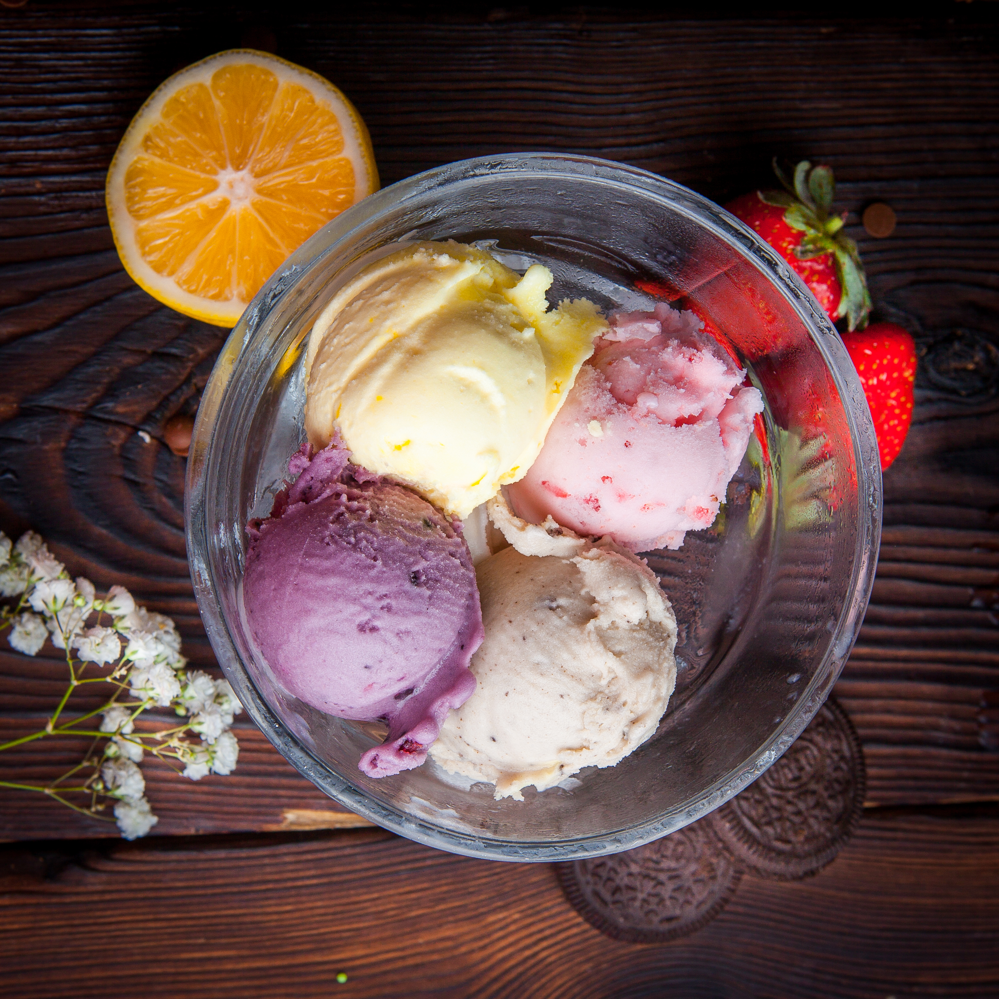

Recipe
Home

Descriprion of Ice Cream
Ice cream is a frozen dairy dessert made by churning and freezing a sweetened cream base until it turns smooth and scoopable. Originating from early chilled treats in ancient China and Persia before evolving into modern custard-style recipes in Europe, classic ice cream relies on a careful balance of milkfat, sugar, and air. As the liquid base freezes while being stirred, tiny ice crystals and microscopic air pockets form simultaneously, preventing the mixture from turning into a solid block of ice and giving it a rich, creamy texture.
Today, ice cream comes in countless styles and flavors worldwide, ranging from dense, egg-yolk-rich French custard bases and Italian gelato to lighter, egg-free Philadelphia-style recipes. Popular mix-ins like chocolate chips, fruit swirls, nuts, and cookie dough add texture, while plant-based versions made with coconut, oat, or almond milk offer dairy-free alternatives. Whether served in a cone, scooped into a bowl, or blended into a milkshake, it remains one of the most popular warm-weather treats and comfort desserts.
List of Ingredients
- Heavy cream: 2 cups (480 ml) for richness and smooth texture
- Whole milk: 1 cup (240 ml) to balance the fat content
- • Granulated sugar: ¾ cup (150 g) to sweeten and keep the mixture scoopable
- Egg yolks: 4 large yolks (optional, for a richer custard-style base)
- Flavoring: 2 tsp pure vanilla extract (or cocoa powder, fruit purée, or crushed cookies)
- • Salt: A pinch (⅛ tsp) to enhance overall sweetness
Steps to make Ice Cream
- Heat the Dairy Base: Pour the heavy cream, whole milk, sugar, and a pinch of salt into a medium saucepan over medium heat. Stir occasionally until the sugar completely dissolves and the mixture is warm and steaming around the edges, making sure not to let it come to a full boil.
- Temper the Egg Yolks (Optional for Custard Style): In a separate bowl, whisk the egg yolks until smooth, then slowly pour about half a cup of the warm cream mixture into the yolks while whisking constantly so they warm up without scrambling. Pour the tempered egg mixture back into the saucepan and cook over low heat, stirring continuously with a wooden spoon until the base thickens enough to coat the back of the spoon.
- Chill the Mixture: Remove the pan from the heat, stir in the vanilla extract, and pour the base through a fine-mesh strainer into a clean bowl to catch any cooked egg bits. Cover the bowl with plastic wrap pressed directly onto the surface to prevent a skin from forming, then refrigerate for at least four hours or overnight until thoroughly chilled.
- Churn and Freeze: Pour the cold ice cream base into an ice cream maker and churn according to the manufacturer's instructions—usually 20 to 25 minutes—until it reaches a thick, soft-serve consistency, adding any mix-ins during the last few minutes. Transfer the churned ice cream into an airtight container, press parchment paper against the top, and freeze for at least four hours until firm enough to scoop.